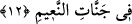
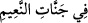

onlar, Allah’ın onları yaklaştırmasıyla öndedirler, kendilerinin yaklaşması ile değil. Bu
âyet-i kerîmede, bu kimseler hakkında Allah’ın fazlından onlara büyük ihsânı olduğuna
bir işâret vardır. “Allah rahmetini dilediğine verir. Allah büyük lütuf sahibidir.” (el-
Bakara 2/105)
12. Naîm cennetlerindedir.__WORD__ (fî cennâtin naîm) cümlesi, mânâ itibariyle öncesindeki “mukarrabûn”
kelimesine veya onun zamîrinden hal olan gizli bir fiile bağlıdır. Yâni, “onlar naîm
cennetlerinde, çeşitli nimetlerle dolu bahçelerde oldukları halde” demektir.
Denildi ki; önde olanlar dört kişidir. 1.Musa (a.s)’ın ümmetinden ilk mümin Harbîl. 2.
Firavnun’un ailesinden îman eden kişi. 3. Îsâ (a.s)’ın ümmetinden ilk îman eden
Antakyalı Habib-i Neccar. 4. Hz.Muhammed (s.a.)’in ümmetinden ilk îman eden iki kişi,
Hz. Ebû Bekir ve Hz. Ömer’dir.
Kâ’b demiştir ki: Önde olanlar, kıyâmet gününde başlarına taç giydirilecek olan
Kur’an ehli kimselerdir. Onlar peygamberler olarak yazıldılar, ancak onlara vahiy
gelmemiştir. Kur’an ehli olanlardan maksad, Kur’an tilâvetine devam edenler ve
Kur’an ile âmil olanlardır. Nitekim Nebî (s.a.)’in ahlâkı Kur’an’dan ibaret idi.
Denildi ki, insanlar üç kısımdır: 1. Hayatının ilk yıllarından itibaren hayır ve
iyiliklere başlayıp, dünyadan ayrılıncaya kadar bu iyiliklere devam eden kişiler. İşte
önde ve Allah’a yakın olan kimseler bunlardır. 2. Ömrünün ilk yılları günahla ve uzun
gafletle başlayan, sonra da dönerek tevbe eden kimseler. İşte bunlar sağdaki; kitabı
sağından verilecek olan kişilerdir. 3. Ömrünün ilk yıllarından itibaren kötülüklere
başlayıp dünyadan çıkıncaya kadar bu kötülüklerine devam eden kimsedir. İşte bunlar
soldaki; kitabı solundan verilecek olan kimselerdir.
Hocam ve bilgisine güvenip dayandığım üstadım (Atpazarî Osman Efendi) yazdığı
bazı eserlerinde demiştir ki: Kullar üç bölümdür. a) Unutanlar, b) Zikredenler, c) İhsan
ehli olanlar.
Birinci tür kullar her bakımdan zayıf olanlardır. Bunlarda hiçbir yönden huzur yoktur.
Onlar hayırdan ve iyilikten uzak olup, iyiliğe hiçbir yakınlıkları yoktur. Onlar,
“Soldakiler, ne bahtsızdır onlar” (el-Vâkıa 56/9) diye bahsedilen kimselerdir. Bunlar
gadab, celâl ve kahra uğrayacak olanlardır. Onlar için cehennemde acıtıcı azap ve
kaynar su vardır.
İkinci tür kullar, bir yönü ile zayıf bir yönü ile de huzûr ehli olanlardır. Bir yönü ile
hayırdan uzak iken diğer yönü ile de iyiliğe ve hayra yakınlıkları vardır. Onlar,
“Sağdakiler, ne mutlu o sağdakilere!” (el-Vâkıa 56/8) ayetinde zikredilen kişilerdir.
İşte onlar Allah’ın rahmet, lutuf ve cemal sıfatının tecellîsine mazhar olacaklardır.